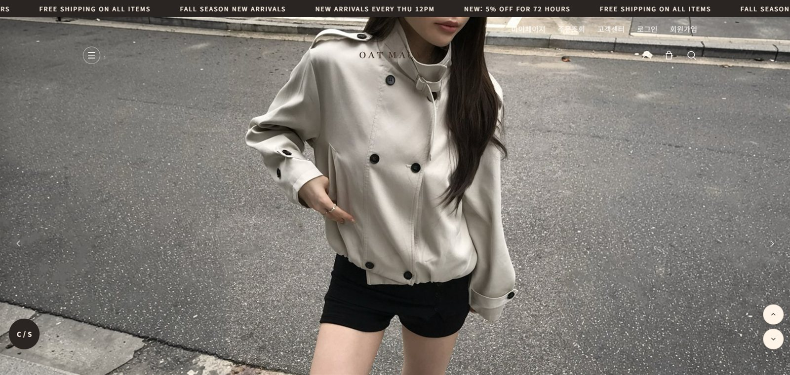

01
오트모브 홈페이지 제작
WEB DESIGN / OATMAUVE
프로젝트 개요
오트모브 홈페이지의 기획과 디자인 과정을 소개하는 프로젝트입니다. 자사 쇼핑몰 제작과 브랜딩 업무를 외주로 담당했습니다.
디자인 과정
카페24 기본 스킨 대신 브랜드 톤에 맞춘 스킨을 처음부터 설계했습니다. 오트(베이지)와 모브(흐린 보라) 사이의 중간색을 무드로 잡고, 배경을 #FFF4E8로 통일해 상품 사진이 자연스럽게 돋보이게 했습니다. 첫 화면은 카피 없는 착장 사진만 두고, 아래는 신상품 → 베스트 → 리뷰 순으로 구매 동선이 이어지게 구성해 실서비스에 적용했습니다.